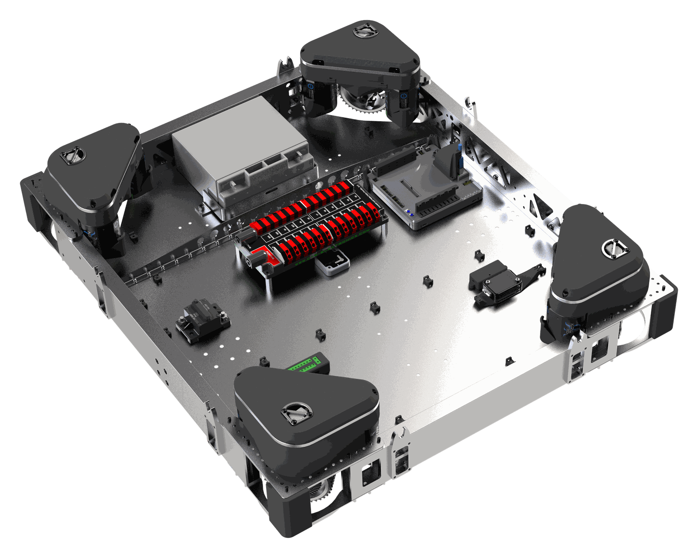

Projects
Selected Work
Drivetrain
FRC 2056 · Mechanical
A 32" × 28" swerve base on MK4i modules — Kraken X60 drive geared to 15 ft/s, Kraken X44 steering.
Requirements
- Agile, responsive, and highly controllable.
- Extremely robust, rigid, and reliable.
- Low centre of mass (CoM).
- Must provide rigid structure and mounting of subsystems.
Details
- Constructed of 3" x 1" x 1/8" aluminum tubing for stiffness and a lower chassis. A 1/16" solid aluminum baseplate acts as a shear plate, offers a mounting surface for electronics, and lowers the overall CoM to improve stability.
- Maximum chassis size of 32" long by 28" wide to ensure stability when scoring.
- The corners of the baseplate are bolted, adding extra support to the rivets.
- The baseplate is fastened directly to the elevator gearbox, and an aluminum angle riveted along the baseplate near the battery prevents sagging.
- Utilizes Swerve Drive Specialties MK4i modules, selected for their proven reliability, low CoM, and team familiarity.
- Powered by Kraken X60 motors for a top speed of 15 ft/s. The L2 gear ratio balances speed and acceleration for the game's short cycle distances.
- Each swerve module steers with a Kraken X44 on a custom shifted adapter plate and a 12-tooth pinion, saving nearly 2 lbs.
Project name
Category
Render.png · transparent
One line on what this project is and the result that matters.
Requirements
- What it had to do.
- The constraint that made it hard.
- The bar it had to clear.
Details
- How you built it — materials, ratios, components.
- A decision you made and why.
- A number that proves the outcome.
Project name
Category
Render.png · transparent
One line on what this project is and the result that matters.
Requirements
- What it had to do.
- The constraint that made it hard.
- The bar it had to clear.
Details
- How you built it — materials, ratios, components.
- A decision you made and why.
- A number that proves the outcome.